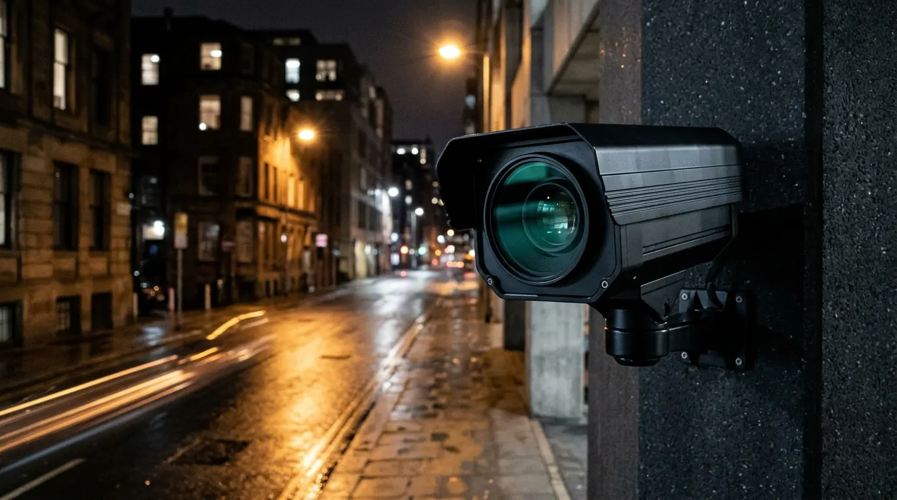
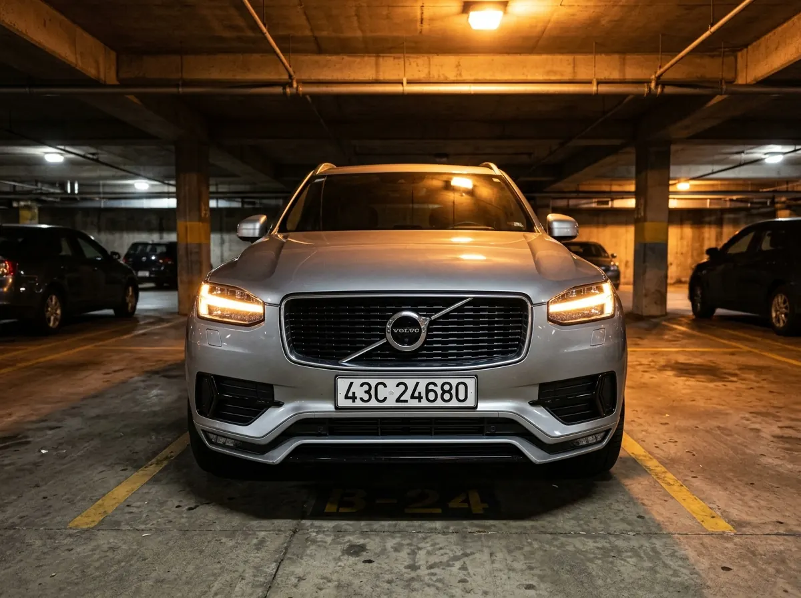
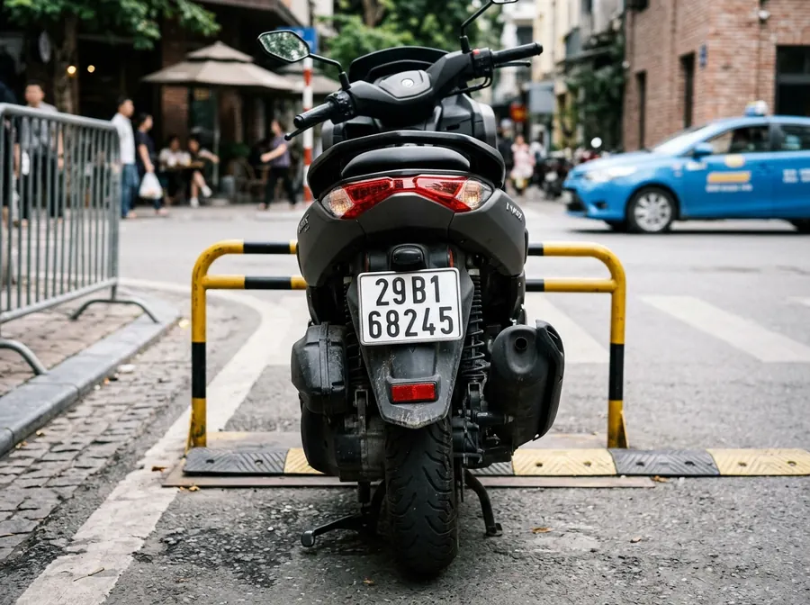

ANPR · YOLOv8 + EasyOCR · Vietnam
Read at the gate.
A car rolls up to the camera at night. YOLOv8 finds the plate, EasyOCR reads it, a format check verifies it. This page is that single shot — told in scroll.
DETECTION — YOLOv8
First, the plate is found.
A fine-tuned YOLOv8n — one class, license_plate — scans the whole frame and locks onto the plate, ignoring headlights, grilles and wet asphalt. Nothing is read until the geometry is certain.

SAMPLE FRAME — REPOSITORY TEST PHOTO, PLATE 43C-246.80 · THE V2 MODEL DETECTS ORIENTED BOXES (OBB) INSTEAD OF AXIS-ALIGNED ONES
PREPROCESSING — detect.py · preprocess_plate()
Then it is cleaned.
Four operations, in the exact order the code runs them. No thresholding, no magic — the crop is trimmed, flattened to grey, contrast-equalised and enlarged so the recogniser sees glyphs, not glare.
RENDERED LIVE IN YOUR BROWSER FROM THE REAL CROP — THE SAME OPERATIONS, THE SAME ORDER
RECOGNITION — EasyOCR
Then it reads.
EasyOCR reads the cleaned crop with a strict allowlist — A–Z and 0–9 only. Two-line motorbike plates are split by line and sorted left to right before the characters are joined.
RAW OCR · 43C24680
FORMAT CHECK · 43 PROVINCE · C SERIES · 246.80 SERIAL — 8 GLYPHS, VIETNAMESE PATTERN
CONFUSION FIXES ARMED · O→0 · I→1 · Z→2 · S→5 · B→8
READ FROM THE REPOSITORY'S OWN SAMPLE PHOTOS

LIVE DEMO — IN YOUR BROWSER
Try it. Right here.
Drop a plate photo — or use a sample — and the browser finds the plate region and reads it. Nothing is uploaded; the image never leaves your device.
Honest label: this demo runs a lightweight browser pipeline — ROI detection + Tesseract.js. The production system reads with YOLOv8 + EasyOCR in Python (v2: OBB detection + PaddleOCR) and does not run on this static page. For the full workbench, open the app.
ENGINE NOT LOADED — IT LOADS ONLY WHEN YOU RUN
RECOGNISED PLATE
— — —
OPEN THE FULL WORKBENCH — DRAGGABLE ROI, CROPS, RAW PAYLOAD →
HOW IT WORKS
The pipeline, honestly.
Five stages, exactly as implemented in detect.py. A second-generation variant (detect_v2.py) swaps the detector and the reader — same road, straighter plates.
-
01
Detect
YOLOv8n, fine-tuned on plate photos. One class: license_plate. Confidence floor 0.50.
ultralytics · YOLO(weights)
-
02
Crop
The bounding box becomes the working image. Everything outside it is ignored from here on.
img[y1:y2, x1:x2]
-
03
Preprocess
Trim 5% of the border, convert to grayscale, equalise the histogram, upscale 2× with cubic interpolation.
preprocess_plate()
-
04
Read
EasyOCR with an A–Z / 0–9 allowlist. Two-line plates are split by line centre and sorted by X before joining.
easyocr.Reader(['en'])
-
05
Validate
The string is checked against the Vietnamese pattern — 2 province digits, 1–2 letters, 8 glyphs — and optical confusions are repaired in digit positions.
normalize_plate()
V2 — detect_v2.py
YOLOv8-OBB predicts four corners instead of a box; a perspective warp (cv2.warpPerspective) deskews the plate flat; PaddleOCR with angle classification reads it. Built for angled checkpoint cameras.
RUNTIME A · PYTHON + GPU — cam.py READS A LIVE CAMERA FEED
RUNTIME B · BROWSER — ROI + TESSERACT.JS, ZERO SERVER (THE DEMO ABOVE)
EVAL · evaluate_ocr.py SCORES OCR AGAINST A LABELLED SET OF 100+ MOTORBIKE PLATES
Built in the open. Read the code.
Every step on this page maps to a function in the repository — no staged numbers, no borrowed benchmarks. If it is claimed here, it is in the code.
← INDEX — MORE WORK BY TRẦN HUY HOÀNG